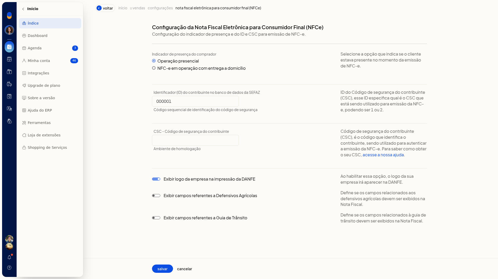
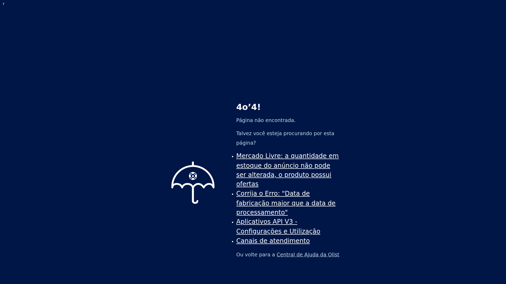
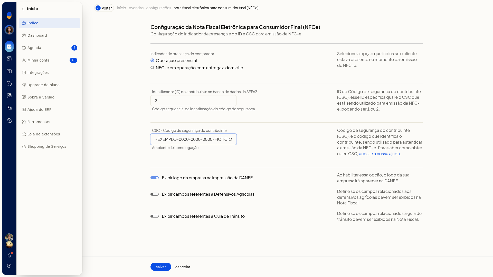

Configurar a NFC-e (inclui PAF-NFC-e em SC)
Pré-requisitos
- Tenha o identificador (ID) do CSC e o código CSC do contribuinte do ambiente de homologação.
- Se a empresa é de Santa Catarina, a extensão PAF-NFC-e precisa estar instalada para continuar a configuração.
- Se a opção não aparecer para você, peça acesso ao administrador da conta.
Importante
- Nenhum campo desta tela é obrigatório.
- O ID pode ser 1 ou 2 e indica qual CSC será usado.
- O CSC desta tela é o do Ambiente de homologação. Não há outro campo de CSC na mesma tela.
- Esta tela não instala a extensão PAF-NFC-e.
Instruções
-
Acesse Configurações > Configurações ERP.
-
Na tela Configurações do Sistema ERP, abra a aba Notas Fiscais.

-
Abra Configuração da nota fiscal eletrônica para consumidor final (NFCe). O item pode aparecer com o aviso Configuração pendente.
-
Em Indicador de presença do comprador, selecione Operação presencial ou NFC-e em operação com entrega a domicílio, conforme o cliente estava ou não presente no momento da emissão. A opção de entrega a domicílio não abre outros campos nesta tela.

-
Preencha Identificador (ID) do contribuinte no banco de dados da SEFAZ com 1 ou 2.
-
Preencha CSC - Código de segurança do contribuinte com o CSC do Ambiente de homologação.

-
Se quiser, ajuste as opções de exibição. Cada uma descreve o efeito ao lado:
-
Exibir logo da empresa na impressão da DANFE: o logo da empresa na impressão da DANFE
-
Exibir campos referentes a Defensivos Agrícolas: os campos de defensivos agrícolas na nota
-
Exibir campos referentes a Guia de Trânsito: os campos da guia de trânsito na nota

- Revise os dados e clique em Salvar.
Informações adicionais
- O aviso Configuração pendente aparece quando as configurações iniciais da nota fiscal ainda não foram concluídas.
- O aviso para instalar a extensão PAF-NFC-e só aparece para empresas de Santa Catarina, e somente depois que as configurações iniciais da nota fiscal foram concluídas.